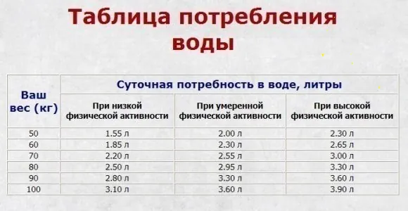

Ежедневно выпивайте литр воды: питьевой режим на каждый день
Коротко: потребность в воде зависит от возраста, веса, активности, климата и питания, поэтому единой нормы для всех нет. Часто слышат ориентир «около двух литров в сутки», но он включает воду из еды и других напитков. Если вы пьёте мало, добавить один литр чистой воды в течение дня — разумный и посильный шаг. При хронических заболеваниях объём лучше согласовать с врачом.
Откуда берётся «норма» воды и почему она условна
Цифры вроде двух литров в день — это усреднённый ориентир, а не медицинское предписание. Организм получает жидкость не только из стакана: её много в супах, овощах, фруктах, чае и других напитках. Поэтому количество воды, которое нужно выпить именно «в чистом виде», у разных людей отличается.
На потребность влияют несколько факторов:
- жаркая погода и сухой воздух в помещении, особенно в отопительный сезон;
- физические нагрузки и потоотделение;
- рацион: солёная и белковая пища требует больше жидкости;
- беременность и период кормления, возраст, состояние здоровья.
Лучший индикатор — самочувствие и жажда. Не стоит ждать сильной жажды, но и пить через силу тоже не нужно.
Зачем организму вода
Вода входит в состав клеток и межклеточной жидкости, участвует в терморегуляции, помогает перемещать питательные вещества и растворять вещества, которые организм выводит. При недостатке жидкости у многих людей появляются сухость во рту, усталость и снижение концентрации внимания. Это общие, неспецифические признаки, поэтому при частых жалобах стоит обратиться к врачу, а не рассчитывать на одну воду.
Важно понимать и границы: вода не заменяет лечение и не «ускоряет метаболизм» сама по себе. Регулярный питьевой режим помогает поддерживать нормальный водный баланс, и это его главная задача.
Почему добавочный литр удобно брать из очищенной воды
Многие не любят вкус водопроводной воды: он зависит от источника, состояния труб и района. Когда вода неприятна на вкус, пить её хочется реже. Поэтому дополнительный литр проще осилить, если вода нейтральная на вкус и всегда под рукой.
Наша вода «Кришталево-чиста питна вода» проходит 8 ступеней очистки, включая обратный осмос и озонирование, а её pH составляет около 7,5. Подробности процесса описаны на странице технологии очистки, а об особенностях обратного осмоса — в материале обратный осмос: плюсы и минусы.
Как приучить себя пить воду: 6 простых приёмов
- Стакан воды утром. После сна многие чувствуют сухость во рту, и 200-300 мл воды — простой старт дня. Если стакан натощак вам неудобен, пропустите этот шаг.
- Бутылка на виду. Когда ёмкость стоит на рабочем столе, вы пьёте машинально, не дожидаясь сильной жажды.
- Привязка к действиям. Выпивайте стакан после каждого звонка, перед обедом или после возвращения домой.
- Напоминания. Установите сигнал в телефоне раз в два часа первые две недели, пока привычка не закрепится.
- Вода рядом с кофе. К чашке кофе или чая добавьте стакан воды: так проще набрать общий объём жидкости.
- Помпа на бутыль. Когда воду можно налить одной рукой, она становится доступнее, чем любой другой напиток.
Сколько и когда пить: практичные советы
Распределяйте воду равномерно в течение дня, небольшими порциями: так проще и комфортнее, чем выпивать большой объём за один раз. Вечером ориентируйтесь на самочувствие, чтобы ночной сон не прерывался. Если вы занимаетесь спортом или находитесь на жаре, пейте чаще и отдельно уточните, какой объём подходит именно вам.
Есть случаи, когда объём жидкости ограничивают по назначению врача: например, при некоторых заболеваниях сердца и почек. В такой ситуации нельзя ориентироваться на общие рекомендации, и любые изменения питьевого режима нужно согласовывать со специалистом.
Для семьи с детьми полезно ознакомиться с материалом требования к воде для детей: детям требования и объёмы отличаются от взрослых.
Признаки того, что воды не хватает
Организм подаёт несколько общих сигналов: сильная жажда, сухость губ и кожи, тёмный цвет мочи, головная боль, снижение концентрации. Эти симптомы неспецифичны и могут иметь другие причины, поэтому при их повторении нужно обратиться к врачу. Если же вы просто мало пьёте в течение дня, обратите внимание на режим: многие забывают о воде за рабочими делами и вспоминают о ней только к вечеру.
Стоит помнить и об обратной стороне: слишком большой объём воды, выпитый за короткое время, тоже может быть вреден. Поэтому увеличивайте порции постепенно и прислушивайтесь к самочувствию.
Мини-план на первые две недели
Первые дни просто фиксируйте, сколько вы пьёте в обычный день: это даст точку отсчёта. На второй-третий день добавьте один дополнительный стакан в одно и то же время. К концу первой недели доведите прибавку до нескольких стаканов, распределив их по дню. На второй неделе закрепите привычку: бутыль или стакан должны быть в тех местах, где вы проводите больше всего времени.
Частые вопросы
Правда ли, что нужно пить ровно два литра воды в день?
Нет, это усреднённый ориентир. Фактический объём зависит от вашего веса, активности, погоды и питания, а часть жидкости вы получаете из еды и других напитков.
Можно ли заменить воду чаем или соком?
Часть жидкости можно получать из них, но чай, кофе и сладкие напитки содержат кофеин или сахар. Чистая вода остаётся простым и нейтральным вариантом для повседневного питья.
Сколько стоит доставка воды Crystal Water?
Бутыль объёмом 19,9 л стоит 100 грн, залог за тару — 225 грн, помпа — 160 грн. Минимальный заказ — 2 бутыли.
Что делать, если вода кажется безвкусной?
Нейтральный вкус — нормальный признак очищенной воды. Добавьте в стакан дольку лимона или охладите воду, если так пить комфортнее.
Сделайте питьевой режим удобным
Закажите воду Crystal Water в Броварах или Киеве: первая бутыль для пробы бесплатно, минимальный заказ — 2 бутыли. Больше материалов — в разделе статьи.
Посмотреть цены и заказать